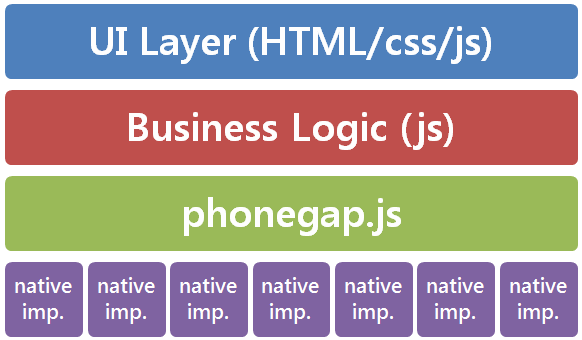
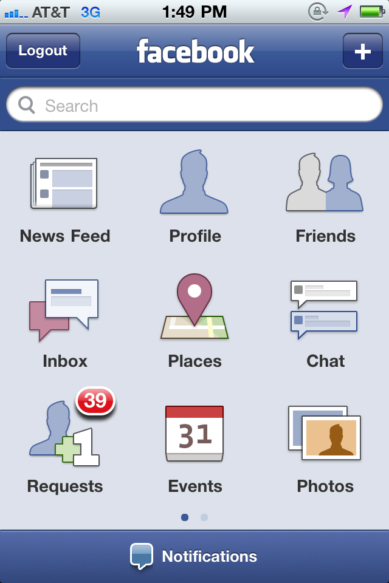

Firefox OS - What, why and how
Firefox OS - Introduction
Why we're making Firefox OS and why the mobile web is so important
Olav Nymoen, Comoyo
Embrace, extend - extinguish




"The biggest mistake we made, as a company, was betting too much on HTML5 rather than native,"
- Zuckerberg, 2012

Mozilla working on mobile


developer.mozilla.org/WebAPI